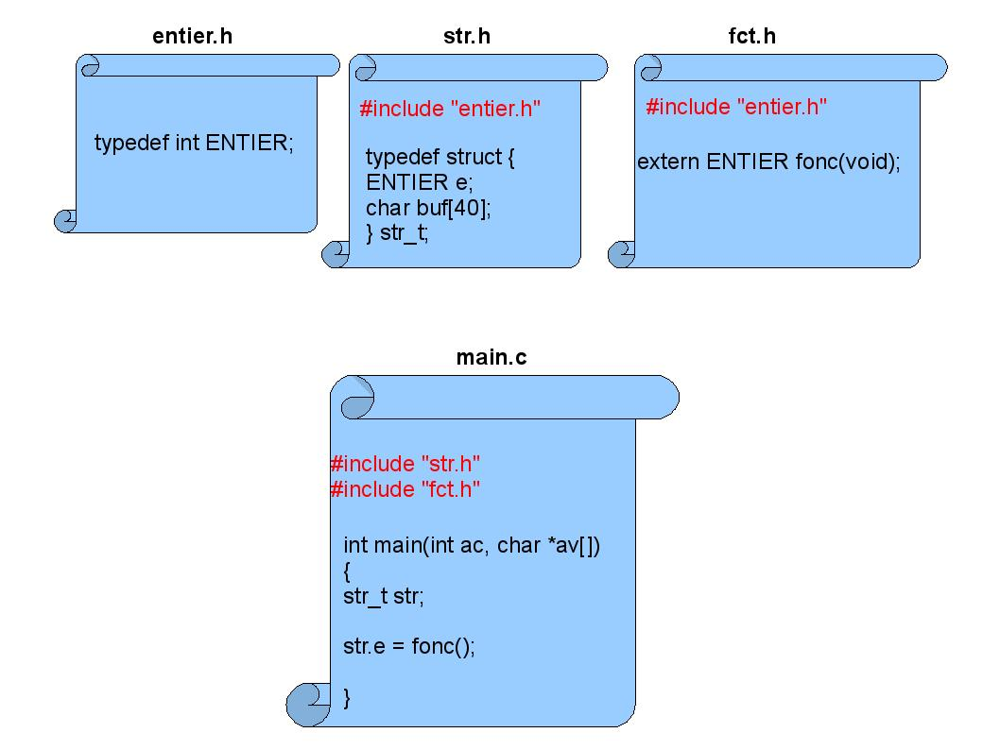

Better use of the C
language preprocessor
|
|
| |
|
|
In C language, the preprocessing
is the step before the
compilation. This is a powerful mechanism which permits the conditional
compilation, the file inclusion and the definition of
macro-intructions. Although very simple at first sight, those
facilities must be used with caution to avoid compilation errors in the
best cases and program dysfunctionning in the worse cases. Moreover the
GCC preprocessor provides additional facilities which may appear very
useful.
Thanks to the macro
processor of the C language, it is possible to define and use constants
as follow:
| 1 #include
<stdio.h> 2 3 #define CONSTANT_1 (0x3d+20) 4 #define CONSTANT_2 (0x3e+20) 5 #define CONSTANT_3 (0x3f+20) 6 7 int main(int ac, char *av[]) 8 { 9 printf("%u\n", CONSTANT_1); 10 printf("%u\n", CONSTANT_2); 11 printf("%u\n", CONSTANT_3); 12 } |
| $ gcc main.c main.c:10:18: error: invalid suffix "+20" on integer constant |
The
compiler point out an error at line 10, column 18 that is to say at the
location of the CONSTANT_2
macro.
This is a weakness of the compiler which believes to encounter an
integer constant with the value "0x3" along with the exponent "e+20":
0x3 x 10^20. This is not a legal notation in C language as the
exponents arte not allowed for the hexadecimal constants. To get out of
this error, CONSTANT_2 may be
rewritten with blanks as:
| #define CONSTANT_2 (0x3e + 20) |
This makes possible the compilation and the execution of the program:
| >
gcc main.c > ./a.out 81 82 83 |
So, it
is advised to systematically put spaces arounf the "+" and "-"
operators when we define a macro with the hexadecimal digit "e".
It is not recommended to
end a macro with ";" as shown in the following example:
| 1
#define
ADD(a,
b)
a
+
b; 2 3 int main(int ac, char *av[]) 4 { 5 int r = ac; 6 7 if (r) 8 r = ADD(4, 5); 9 else 10 r = ADD(5, 6); 11 12 return 0; 13 } |
This ends with a compilation error:
| $ gcc main.c main.c: In function 'main': main.c:9: error: 'else' without a previous 'if' |
The line
number 9 contains two C instructions because of the ending ";" of the ADD() macro. The output of the
preprocessor shows:
| >
gcc -E main.c [...] if (r) r = 4 + 5;; else r = 5 + 6;; |
So, the else instruction becomes orphan
because the if to which it is
supposed to belong to contains more than one instruction which are not
grouped inside braces: "r = 4 + 5" and the empty instruction ";".
When a macro contains
several instructions like:
| #define
ADD(a, b, c) \ printf("%d + %d ", a, b); \ c = a + b; \ printf("= %d\n", c); |
We may
face the compilation error seen in §2
if it is used in a if
instruction because the user of the macro may not put braces around the
call. Or perhaps the macro originally contained a single instruction
and was naturally used without braces around it inside the if instructions but an enhancement
of the software introduced additional instrcutions in the macro. This
may trigger unexpected software dysfunctionnings. For example, if the
macro is used in a while
without braces:
| #include
<stdio.h> #define ADD(a, b, c) \ printf("%d + %d ", a, b); \ c = a + b; \ printf("= %d\n", c); int main(int ac, char *av[]) { int i = 0; int r = 0; while (av[i++]) ADD(r, 1, r); return 0; } |
We
expect that all the instructions of the macro are executed in each
iteration of the loop. Unfortunately, the preprocessor will generate a
suite of instructions without braces. So, at each iterations, only the
first instruction "printf("%d
+
%d
",
a,
b);" is
executed. To avoid those kind of errors, it is advised to group the
instructions in a "do-while" without any ending ";" (rule of §2) in order to make the macro
appear as a single instruction:
| #define
ADD(a, b, c) do
{ \ printf("%d + %d ", a, b); \ c = a + b; \ printf("= %d\n", c); \ } while(0) |
The
compiler will not generate any loop as the test condition of the loop
is always false: while(0). We
should not consider to use only braces because this would trigger the
problem seen in §2 if the
macro is used followed by a ";" in a "if-else". Under this
format, it is mandatory for the user to put an ending ";" behind the
macro when he uses it otherwise he would get a compilation error as if
it was any other single instruction not followed by a ";". This is the
standard programming way in C language.
Let's consider the
following program which defines and uses a macro excuting an integer
division:
|
#include <stdio.h>
#define DIV(a, b, c) do { \ printf("%d / %d ", a, b); \ c = a / b; \ printf("= %d\n", c); \ } while(0)
int main(int ac, char *av[]) { int r = 5; int v1 = 12; int v2 = 6;
DIV(v1, v2, r); DIV(v1 + 6, v2, r);
return 0; } |
At
runtime we expect the display of the value 2 as the result for the
first division (12 / 6) and 3 as the result for the second division ((12 + 6)
/ 6). But we get the erroneous following result instead:
|
> ./a.out 12 / 6 = 2 18 / 6 = 13 |
As
usual, when there are doubts, the output of the preprocessor is useful:
|
int main(int ac, char *av[]) { int r = 5; int v1 = 12; int v2 = 6;
do { printf("%d / %d ", v1, v2); r = v1 / v2; printf("= %d\n", r); } while(0); do { printf("%d / %d ", v1 + 6, v2); r = v1 + 6 / v2; printf("= %d\n", r); } while(0);
return 0; } |
We can
see that we face a problem of operator precedence at the second call of
DIV(). In the expression "r = v1 + 6 / v2", the operator
"/" is more prioritary than the "+". So, the compiler generates an
operation equivallent to "r = v1 + ( 6 / v2
)". Hence the result 13 when v1
and v2 have respectively the
values 12 and 6. The solution consists in puting parentheses around all
the occurences of the macro parameters:
|
#define DIV(a, b, c) do { \ printf("%d / %d ", (a), (b)); \ (c) = (a) / (b); \ printf("= %d\n", (c)); \ } while(0) |
The
second call to DIV() in the
preceding program now gives the right operation in the output of the
preprocessor:
|
do { printf("%d / %d ", (v1 + 6), (v2)); (r) = (v1 + 6) / (v2); printf("= %d\n", (r)); } while(0); |
Let's consider the
constant defined as the macro CONSTANT
and used as follow:
|
#include <stdio.h>
#define BASE 2000 #define CONSTANT BASE + 2
int main(int ac, char *av[]) { printf("%d\n", CONSTANT / 2);
return 0; } |
The
expected result is the result of the operation "2002 / 2", that is to
say 1001. But we get 2001. The output of the preprocessor show that we
have a problem of operator precedence like the one we face in § 4:
| printf("%d\n", 2000 + 2 / 2); |
As a
general rule, if a macro contains an expression (contant, test, ...),
it is advised to use parentheses. Hence the following fix for our
example:
|
#define BASE (2000) #define CONSTANT (BASE + 2) |
On a souvent tendance à utiliser une macro comme si c'était une fonction ou alors des évolutions de code peuvent mener au fait qu'une fonction deviennent une macro pour des raisons de lisibilité ou d'optimisation. Voici un exemple de programme qui définit et utilise la macro IS_BLANK(c) qui retourne vrai si le paramètre est un caractère blanc (espace ou tabulation) :
|
#include <stdio.h>
#define IS_BLANK(c) ((c) == '\t' || (c) == ' ')
int main(int ac, char *av[]) { char *p = av[0];
while(*p) { if (IS_BLANK(*(p++))) { printf("Blanc à l'indice %d\n", (p - 1) - av[0]); } }
return 0; } |
Ce programme est sensé afficher les indices des caractères blancs dans son nom. Pourtant l'indice affiché est erroné ou certains blancs ne sont pas détectés :
|
> gcc main.c -o "nom avec espaces" > ./nom\ avec\ espaces Blanc à l'indice 5 |
Le seul blanc détecté est indiqué à l'indice 5 alors que dans la chaîne de caractères « ./nom avec espaces », il y a des blancs aux indices 5 et 10. Ceci est du au fait que le paramètre c est évalué deux fois dans la macro IS_BLANK() : la première fois pour être comparé à '\t' et la seconde pour être comparé à ' '. Or, le programme passe *(p++) à la macro. Ce qui donne en sortie du préprocesseur :
| if (((*(p++)) == '\t' || (*(p++)) == ' ')) |
En d'autres termes, la première comparaison se fait avec le caractère pointé par p, p étant ensuite incrémenté (post-incrémentation), la seconde comparaison se fait avec le caractère suivant. En retour de macro, p est de nouveau incrémenté. La bonne écriture pour le programme est donc d'éviter de passer une expression en paramètre de la macro :
|
#include <stdio.h>
#define IS_BLANK(c) ((c) == '\t' || (c) == ' ')
int main(int ac, char *av[]) { char *p = av[0];
while(*p) { if (IS_BLANK(*p)) { printf("Blanc à l'indice %d\n", p - av[0]); }
p ++; }
return 0; } |
Il n'est pas toujours évident de respecter cette règle surtout si IS_BLANK() était une fonction et après évolution du code source, la fonction est devenue une macro. En effet, une telle modification implique qu'une revue complète du code soit faite. Ce n'est pas facile voire impossible si la macro est définie dans un fichier d'entête qui est déjà utilisé dans nombre de programmes à travers le monde.
Une extension spécifique à GCC, donc pas forcément conforme à l'ANSI C, offre l'opportunité de transformer des blocs d'instructions (instructions encadrées par des accolades) en expression (cf. [1]). Comme il est par ailleurs possible de déclarer des variables locales à un bloc, la macro IS_BLANK() peut être réécrite comme suit :
|
#include <stdio.h>
#define IS_BLANK(c) ({char _c = c; ((_c) == '\t' || (_c) == ' ');})
int main(int ac, char *av[]) { char *p = av[0];
while(*p) { if (IS_BLANK(*(p++))) { printf("Blanc à l'indice %d\n", (p - 1) - av[0]); } }
return 0; } |
La variable locale _c a été définie à l'intérieur du bloc de la macro pour stocker la valeur du paramètre. Ainsi, ce dernier n'est évalué plus qu'une seule fois : au moment de l'affectation de la variable locale.
La norme ISO C99 permet de définir des macros avec un nombre variable d'arguments. Il existe deux notations :
|
1 #include <stdio.h> 2 3 #define DEBUG(fmt, ...) \ 4 fprintf(stderr, fmt "\n", __LINE__, __VA_ARGS__) 5 6 #define DEBUG2(fmt, args...) \ 7 fprintf(stderr, fmt "\n", __LINE__, args) 8 9 int main(int ac, char *av[]) 10 { 11 DEBUG("Nom du programme = %s", av[0]); 12 DEBUG("Message sans arguments"); 13 14 DEBUG2("Nom du programme = %s", av[0]); 15 DEBUG2("Message sans arguments"); 16 17 return 0; 18 } |
DEBUG() et DEBUG2() sont des surcharges de la fonction fprintf() pour afficher un message d'erreur formaté. Le paramètre fmt concaténé à des chaînes de caractères est le format passé en premier argument de la fonction d'affichage. Les notations __VA_ARGS__ ou « args » représentent tous les arguments en nombre variable avec les virgules qui les séparent. La seconde notation est souvent préférée à la première dans la mesure où elle permet de nommer les arguments (par exemple ici avec args) au lieu d'utiliser l'identifiant générique __VA_ARGS__. La seconde notation était d'ailleurs spécifique à GCC avant que les macros à nombre variable d'arguments ne soient normalisées. Sur d'anciennes versions de GCC, c'est donc la seule notation supportée.
Bien que très pratique, ces écritures présentent un inconvénient de taille : elles n'autorisent pas l'appel sans arguments. Voici le résultat de la compilation suivie de la sortie du préprocesseur pour le programme précédent :
|
> gcc main.c main.c: In function «main": main.c:12: erreur: expected expression before «)" token main.c:15: erreur: expected expression before «)" token > gcc -E main.c [...] int main(int ac, char *av[]) { fprintf(stderr, "Nom du programme = %s" "\n", 11, av[0]); fprintf(stderr, "Message sans arguments" "\n", 12, );
fprintf(stderr, "Nom du programme = %s" "\n", 14, av[0]); fprintf(stderr, "Message sans arguments" "\n", 15, );
return 0; } |
Les erreurs de compilation viennent de la virgule qui précède la liste vide des arguments variables au deuxième et quatrième appel à fprintf(). GCC propose une extension très utile à travers la notation « ## » pour supprimer la virgule quand la liste des arguments qui la succède est vide. D'où la réécriture suivante des macros :
|
#define DEBUG(fmt, ...) \ fprintf(stderr, fmt "\n", __LINE__, ## __VA_ARGS__)
#define DEBUG2(fmt, args...) \ fprintf(stderr, fmt "\n", __LINE__, ## args) |
Il existe de nombreuses macros et notations ayant un rôle particulier pour le préprocesseur. Dans ce paragraphe, seuls sont cités les plus utiles ou tout au moins les plus usitées.
La macro __GNUC__ est toujours définie lorsqu'on utilise la chaîne de compilation GCC. C'est donc conseillé pour faire de la compilation conditionnelle quand un programme utilise des extensions spécifiques à GCC mais qui est susceptible d'être compilé par d'autres chaînes de compilation (cf. § 9 pour un exemple d'utilisation).
Les macros __LINE__, __FILE__ et __FUNCTION__ sont respectivement remplacées par le numéro de ligne, le nom de fichier et le nom de la fonction dans lesquelles elles apparaîssent. Ces facilités sont en général utilisées pour la génération de traces et d'erreurs pour aider à la mise au point. Pour illustrer, voici un petit programme affichant ses arguments à l'aide de la macro DEBUG() dont la valeur ajoutée est d'imprimer le nom de fichier, le nom de la fonction et le numéro de ligne d'où elle est appelée :
|
#include <stdio.h>
#define DEBUG(fmt, args...) \ fprintf(stderr, "%s(%s)#%d : " fmt , \ __FILE__, __FUNCTION__, __LINE__, ## args)
int main(int ac, char *av[]) { int i;
for (i = 0; i < ac; i ++) { DEBUG("Param %d is : %s\n", i, av[i]); }
return 0; } [...] > gcc debug.c > ./a.out param1 param2 debug.c(main)#14 : Param 0 is : ./a.out debug.c(main)#14 : Param 1 is : param1 debug.c(main)#14 : Param 2 is : param2 |
On notera que __FUNCTION__ est spécifique à GCC. Le standard C est arrivé après avec la définition __func__. Bien que donnant un résultat identique, ces deux notations avait une différence de taille : la première s'expansait en une chaîne de caractères constante tandis que l'autre se comportait comme si en début de chaque fonction, un tableau local de nom « __func__ » était défini et initialisé avec la chaîne de caractères constante qui contient le nom de la fonction. Donc d'un coté, on avait une constante qui pouvait être concaténée au moment de la compilation à d'autres chaînes de caractères alors que de l'autre on avait une variable. Mais depuis la version 3.4 du compilateur GCC, ces deux notations sont identiques et se comportent toutes deux comme des variables.
La notation « # » permet de convertir un paramètre de macro en chaîne de caractères. Par exemple, voici une fonction qui affiche un numéro de signal Linux gràce à la macro CASE_SIG() :
|
#include <stdio.h> #include <signal.h> #include <stdlib.h>
#define CASE_SIG(s) case (s) : printf("%s\n", "SIGNAL_" #s); break
void signum(int sig) { switch(sig) { CASE_SIG(SIGINT); CASE_SIG(SIGTERM); CASE_SIG(SIGKILL); CASE_SIG(SIGTRAP); CASE_SIG(SIGSEGV); CASE_SIG(SIGCHLD); [...] default : printf("???\n"); } }
int main(int ac, char *av[]) { if (ac > 1) { signum(atoi(av[1])); } } [...] > gcc signal.c > ./a.out 5 SIGNAL_SIGTRAP |
On a déjà eu une forme d'utilisation de « ## » dans le § 7. Mais il existe une autre forme d'utilisation où cette directive concatène les éléments lexicaux qui l'entourent pour former une nouvelle unité lexicale. Dans l'exemple suivant les mots CONSTA et NTE sont concaténés pour former le nom CONSTANTE qui s'avère être une macro définissant la constante 233 :
|
#include <stdio.h>
#define CONSTANTE 233
#define CONCAT(a, b) a##b
int main(int ac, char *av[]) { printf("%d\n", CONCAT(CONSTA, NTE)); } [...] > gcc concat.c > ./a.out 233 |
Les attributs sont des extensions spécifiques à GCC pour augmenter les contrôles et contribuer à l'optimisation du code généré. Considérons l'exemple suivant où est décrit l'attribut « format » (pour de plus amples informations sur les attributs de GCC, cf. [4]). funct() fait appel à deux fonctions effectuant de l'affichage formaté à la manière de printf() : le premier paramètre contient une description du format d'une chaîne de caractères et la liste variable des paramètres qui suivent est utilisée pour construire la chaîne à afficher. A l'appel de ces fonctions d'affichage, il y a une erreur classique de programmation : le format nécessite l'adresse d'une chaîne de caractères et un entier signé mais la liste des aguments ne contient qu'un entier signé.
|
1 extern void my_printf1 (const char *fmt, ...); 2 3 extern void my_printf2 (const char *fmt, ...) 4 __attribute__ ((format (printf, 1, 2))); 5 6 7 void funct(void) 8 { 9 my_printf1("Affichage de %s suivi de %d\n", 46); 10 11 my_printf2("Affichage de %s suivi de %d\n", 46); 12 } |
La compilation de ce programme avec l'option -Wall va signaler l'erreur de programmation (sous la forme d'un « warning ») pour la ligne 11 mais pas pour la ligne 9. En effet, en ligne 11, on utilise la fonction my_printf2() qui est définie avec l'attribut format pour indiquer que c'est une fonction « printf-like » qui utilise un format en argument 1 et que la liste variable des arguments commence au deuxième paramètre :
|
> gcc -c -Wall attribute.c attribute.c: In function «funct": attribute.c:11: attention : format «%s" expects type «char *", but argument 2 has type «int" attribute.c:11: attention : trop peu d'arguments dans le format |
Si la notion d'attribut est pratique et puissante, elle peut poser problème lorsque le compilateur utilisé n'est pas GCC. Comme la directive __attribute__ est définie avec un seul paramètre (d'où le double parenthésage lorsqu'on lui passe plusieurs paramètres de sorte à ce qu'ils n'apparaîssent que sous la forme d'un seul), il est possible d'utiliser le principe de la compilation conditionnelle pour redéfinir __attribute__ à rien lorsque le compilateur utilisé n'est pas GCC :
|
#ifndef __GNUC__ #define __attribute__(p) // Rien #endif // __GNUC__ |
Dans cet exemple, la condition de compilation utilise le drapeau __GNUC__ qui n'est défini par défaut que lorsque GCC est utilisé (cf. § 8.1).
Un fichier d'entête est inclus dans un fichier source à l'aide de la directive « #include ». Ces fichiers contiennent la plupart du temps des déclarations externes de variables ou fonctions, des définitions de types et de macros. Un fichier d'entête peut lui-même inclure d'autres fichiers d'entête car une règle de base en programmation C est de rendre un fichier d'entête indépendant. En d'autres termes, si un fichier d'entête utilise un type, une macro, une fonction ou une variable, il est recommandé que soit inclus dans ce fichier, le fichier d'entête où se trouve la définition correspondante. Dans l'exemple de la figure 1, le fichier main.c inclut les fichiers d'entête str.h et fct.h qui définissent respectivement le type str_t et la fonction fonc(). Ces deux derniers incluent le fichier entier.h pour la définition du type ENTIER.
Figure 1 : Inclusions multiples

La compilation de main.c donne les erreurs suivantes :
|
> gcc -c main.c In file included from fct.h:1, from main.c:2: entier.h:1: erreur: redefinition of typedef «ENTIER" entier.h:1: erreur: previous declaration of «ENTIER" was here |
Le compilateur remonte le fait que le type ENTIER est défini deux fois. La première définition provient du fichier str.h et la seconde du fichier fct.h qui incluent tout deux le fichier entier.h. Cela donne comme résultat que le fichier main.c inclut le fichier entier.h deux fois. Pour résoudre ce problème on peut utiliser la compilation conditionnelle de sorte à inclure un fichier d'entête seulement si une définition qui lui est propre n'est pas déjà définie. Cette définition est généralement faite à partir du nom du fichier. Afin d'illustrer le propos, voici comment le fichier entier.h est modifié pour être inclus qu'à la condition que ENTIER_H ne soit pas déjà défini :
|
#ifndef ENTIER_H #define ENTIER_H
typedef int ENTIER;
#endif // ENTIER_H |
Cela permet de compiler main.c car ENTIER_H est défini par l'inclusion de entier.h dans str.h et cela va donc empêcher la deuxième inclusion de entier.h via fct.h. D'une manière générale, il est conseillé d'appliquer le principe de l'inclusion conditionnelle à tout fichier d'entête. La figure 2 est une version revue et corrigée de la figure 1 à laquelle a été appliqué ce principe.
Figure 2 : Inclusions conditionnelles

This article introduced
various rules and tricks to get the best from the C preprocessor in
order to enhance the robustness, the portability and the debugging of
the programs.
Those are only a subset of the powerful offered capabilities. The
reader can look at the related links and references of this article to go farther.
[1] GCC extensions: http://sunsite.ualberta.ca/Documentation/Gnu/gcc-2.95.2/html_chapter/gcc_4.html
[2] The C preprocessor : http://www.game-lab.com/index.php?section=tutorials§ion_id=1&p=tutorial&action=showtut&id=221
[3] The C preprocessor : http://www.redhat.com/docs/manuals/enterprise/RHEL-4-Manual/cpp/index.html
[4] GCC attributes : http://www.unixwiz.net/techtips/gnu-c-attributes.html
[5] GCC manuals : http://gcc.gnu.org/onlinedocs/
[6] The C
preprocessor in Wikipedia : http://en.wikipedia.org/wiki/C_preprocessor
[7] Boulay (Nicolas), « Le C n'est pas portable », GLMF 102, Février 2008
[8] Boulay (Nicolas), « Le processus de compilation C », GLMF 103, Mars 2008
[9] Kernighan, Brian.W. & Ritchie, Dennis.M., « Le langage C », 2nd edition, Masson, 1990
|
|